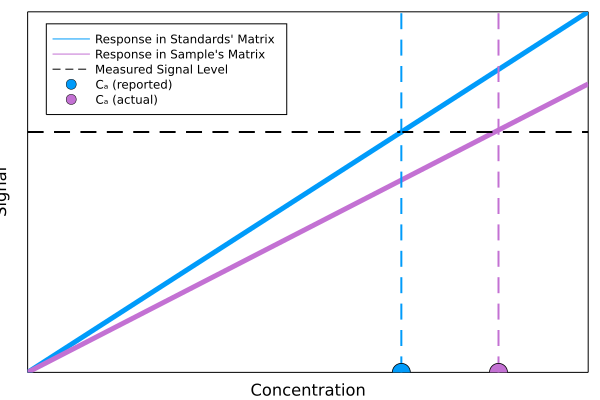
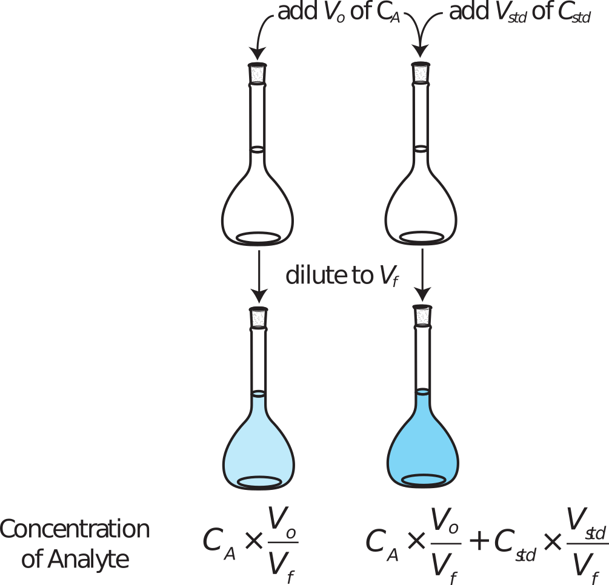
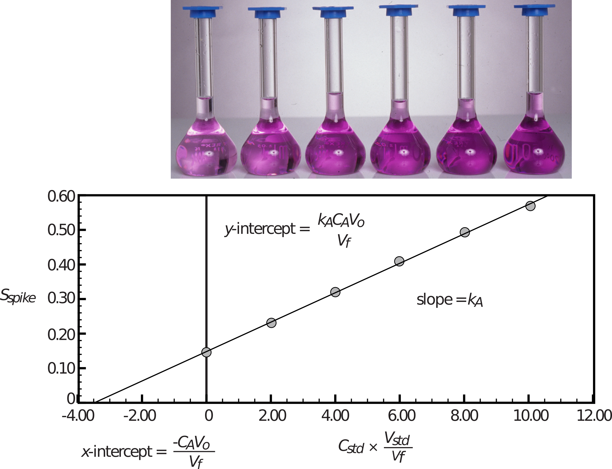
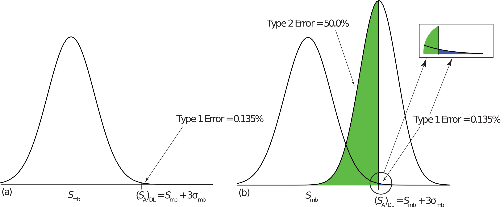
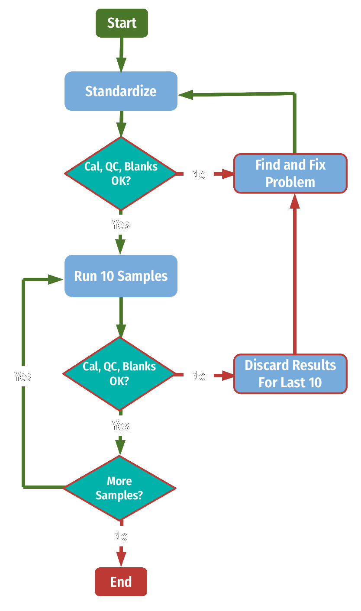

layout: true --- <div style="margin-top: 100px;"></div> <h1 style = "text-align: left; font-weight: bold; margin-left: 175px;">Week 4: Making Sure You're Right</h1> <h5 style = "text-align: left; font-weight: bold; margin-left: 175px;">Harvey Chs 2, 3, 4, 5</h5> <!-- ========================= Accuracy vs. Precision ============================= --> --- <div style="margin-top: 100px;"></div> <h1 style = "text-align: left; font-weight: bold; margin-left: 175px;">Accuracy and Precision</h1> <h5 style = "text-align: left; font-weight: bold; margin-left: 175px;">Harvey Ch 3</h5> --- # Types of Error --- class: center <img src="img/chapter-4/accurate-v-precise_1.png" style = "height:350px; margin-left: auto; margin-right: auto; display: block;"> --- class: center <img src="img/chapter-4/accurate-v-precise_2.png" style = "height:350px; margin-left: auto; margin-right: auto; display: block;"> --- class: center <img src="img/chapter-4/accurate-v-precise_3.png" style = "height:350px; margin-left: auto; margin-right: auto; display: block;"> --- class: center <img src="img/chapter-4/accurate-v-precise_4.png" style = "height:350px; margin-left: auto; margin-right: auto; display: block;"> -- $$ e = \bar{X} - \mu $$ -- $$ e = \text{measured} - \text{expected} $$ --- class: center <img src="img/chapter-4/accurate-v-precise_4.png" style = "height:350px; margin-left: auto; margin-right: auto; display: block;"> $$ e\text{ (%)} = \frac{\bar{X} - \mu}{\mu} \times 100 $$ -- $$ e\text{ (%)} = \frac{\text{measured} - \text{expected}}{\text{expected}} \times 100 $$ --- class: center <img src="img/chapter-4/accurate-v-precise_5.png" style = "height:350px; margin-left: auto; margin-right: auto; display: block;"> --- <div style="margin-top: 100px;"></div> <h1 style = "text-align: left; font-weight: bold; margin-left: 175px;">Propogation of Error</h1> <h5 style = "text-align: left; font-weight: bold; margin-left: 175px;">Harvey Ch 2</h5> --- class: center <div style="margin-top: 200px;"></div> $$ R = A + B - C $$ $$ u\_R = \sqrt{ u\_A^2 + u\_C^2 + u\_C^2 } $$ --- class: center <div style="margin-top: 200px;"></div> $$ R = \frac{A \times B}{C} $$ $$ u\_R = \sqrt{ \left(\frac{u\_A}{A}\right)^2 + \left(\frac{u\_B}{B}\right)^2 + \left(\frac{u\_C}{C}\right)^2 } $$ <!-- ========================= Standard Curve QC ============================= --> --- <div style="margin-top: 100px;"></div> <h1 style = "text-align: left; font-weight: bold; margin-left: 175px;">Checking Your Standard Curve</h1> <h5 style = "text-align: left; font-weight: bold; margin-left: 175px;">Harvey Ch 5</h5> --- class: center <div style="margin-top: 100px;"></div>  .image-credit[David Harvey / [Analytical Chemistry 2.1](https://chem.libretexts.org/Bookshelves/Analytical_Chemistry/Book%3A_Analytical_Chemistry_2.1_%28Harvey%29) / [CC BY-SA 4.0](https://creativecommons.org/licenses/by-sa/3.0/at/deed.en)] --- class: center <div style="margin-top: 100px;"></div>  .image-credit[David Harvey / [Analytical Chemistry 2.1](https://chem.libretexts.org/Bookshelves/Analytical_Chemistry/Book%3A_Analytical_Chemistry_2.1_%28Harvey%29) / [CC BY-SA 4.0](https://creativecommons.org/licenses/by-sa/3.0/at/deed.en)] --- class: center <div style="margin-top: 100px;"></div>  .image-credit[David Harvey / [Analytical Chemistry 2.1](https://chem.libretexts.org/Bookshelves/Analytical_Chemistry/Book%3A_Analytical_Chemistry_2.1_%28Harvey%29) / [CC BY-SA 4.0](https://creativecommons.org/licenses/by-sa/3.0/at/deed.en)] <!-- ========================= Detecting Outliers ============================= --> --- <div style="margin-top: 100px;"></div> <h1 style = "text-align: left; font-weight: bold; margin-left: 175px;">Detecting Outliers</h1> <h5 style = "text-align: left; font-weight: bold; margin-left: 175px;">Harvey Ch 4</h5> --- <div style="margin-top: 100px;"></div> > **Outlier:** A datum that is not consistent with the remaining data. --- class: center <!-- <img src="img/chapter-4/harvey_fig56_dark.png" style = "height:350px; margin-left: auto; margin-right: auto; display: block;"> --> <div style="margin-top: 100px;"></div> <img src="img/chapter-4/outliers.png" style = "height:350px; margin-left: auto; margin-right: auto; display: block;"> .image-credit[David Harvey / [Analytical Chemistry 2.1](https://chem.libretexts.org/Bookshelves/Analytical_Chemistry/Book%3A_Analytical_Chemistry_2.1_%28Harvey%29) / [CC BY-SA 4.0](https://creativecommons.org/licenses/by-sa/3.0/at/deed.en)] --- <div style="margin-top: 200px;"></div> - *Q*-test - Grubbs' Test - Chauvenet’s Criterion --- <div style="margin-top: 200px;"></div> - ~~*Q*-test~~ - **Grubbs' Test** - ~~Chauvenet’s Criterion~~ --- class: center <div style="margin-top: 200px;"></div> $$ G\_{exp} = \frac{| X\_{out} - \bar{X} | }{s} $$ -- If $G\_{exp} > G(\alpha, n)$, then outlier --- class: center <iframe width="635" height="400" src="https://www.youtube.com/embed/7cBITRn8mNE?controls=0&Sautoplay=1" frameborder="0" allow="accelerometer; autoplay; encrypted-media; gyroscope; picture-in-picture" allowfullscreen></iframe> --- class: center <img src="https://upload.wikimedia.org/wikipedia/commons/f/f8/Dobson_Spectrometer.jpg" style = "height:450px; margin-left: auto; margin-right: auto; display: block;"> --- class: center <img src="https://upload.wikimedia.org/wikipedia/commons/f/f5/Aura_spacecraft_model.png" style = "height:350px; margin-left: auto; margin-right: auto; display: block;"> <!-- ========================= Detection Limits ============================= --> --- <div style="margin-top: 100px;"></div> <h1 style = "text-align: left; font-weight: bold; margin-left: 175px;">Limits of Detection</h1> <h5 style = "text-align: left; font-weight: bold; margin-left: 175px;">Harvey Ch 5, Granger Ch 22</h5> --- <div style="margin-top: 100px;"></div> > **(Lower) Limit of Detection:** The smallest concentration or amount of analyte that yields signal *significantly* larger than a blank. -- <div style="margin-left: 200px;"> $$ (S_A)_{LOD} = S_{mb} + z\sigma_{mb} $$ </div> --- <div style="margin-top: 100px;"></div> > **(Lower) Limit of Detection:** The smallest concentration or amount of analyte that yields signal *significantly* larger than a blank. <div style="margin-left: 200px;"> $$ (S_A)_{LOD} = S_{mb} + 3\sigma_{mb} $$ </div> --- class: center  .image-credit[David Harvey / [Analytical Chemistry 2.1](https://chem.libretexts.org/Bookshelves/Analytical_Chemistry/Book%3A_Analytical_Chemistry_2.1_%28Harvey%29) / [CC BY-SA 4.0](https://creativecommons.org/licenses/by-sa/3.0/at/deed.en)] --- <div style="margin-top: 100px;"></div> > **Limit of Quantitation:** The smallest concentration or amount of analyte that can be confidently quantified or distinguished. <div style="margin-left: 200px;"> $$ (S_A)_{LOQ} = S_{mb} + 10\sigma_{mb} $$ </div> --- class: center <img src="img/chapter-4/uloq.png" style = "height:350px; margin-left: auto; margin-right: auto; display: block;"> .image-credit[Granger et al. Instrumental Analysis / Fair Use] <!-- ========================= Blanks ============================= --> --- <div style="margin-top: 100px;"></div> <h1 style = "text-align: left; font-weight: bold; margin-left: 175px;">Blanks</h1> <h5 style = "text-align: left; font-weight: bold; margin-left: 175px;">Harvey Chs 3, 5</h5> --- <div style="margin-top: 100px;"></div> > **Blank:** A solution that contains no analyte used to standardize the instrument and/or check for contamination. --- <div style="margin-top: 100px;"></div> > **Rinse Blank:** Used to check an instrument for contamination upon start up. --- <div style="margin-top: 100px;"></div> > **Calibration Blank:** Used to obtain 0 point on calibration curve. --- <div style="margin-top: 100px;"></div> > **Method Blank:** Goes through all or specific portion of the sample preparation and/or analysis method. --- <div style="margin-top: 100px;"></div> > **Field Blank:** Goes through sample collection method (usually in field). --- <div style="margin-top: 100px;"></div> > **Reagent (Subtraction) Blank:** Used to correct each point (improperly). --- <div style="margin-top: 100px;"></div> > **Total Youden Blank:** Used to correct each point (properly). <!-- ========================= Tying it Together ============================= --> --- <div style="margin-top: 100px;"></div> <h1 style = "text-align: left; font-weight: bold; margin-left: 175px;">Building a Run List</h1> <h5 style = "text-align: left; font-weight: bold; margin-left: 175px;">Harvey Chs 3</h5> --- class: center  .image-credit[Adapted from Fig 3.7, [Analytical Chemistry 2.1](https://chem.libretexts.org/Bookshelves/Analytical_Chemistry/Book%3A_Analytical_Chemistry_2.1_%28Harvey%29) / [CC BY-SA 4.0](https://creativecommons.org/licenses/by-sa/3.0/at/deed.en)] <!-- =============================================================================== -->